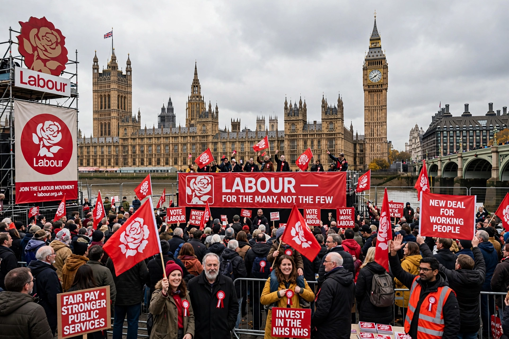

The Labour Party is a centre-left political party in the United Kingdom and, with the Conservative Party, one of the two parties that have dominated British politics since the 1920s.
Founded in 1900 from the trade union movement and socialist societies, Labour first formed a majority government under Clement Attlee in 1945, creating the National Health Service and the modern welfare state. Later governments under Harold Wilson, James Callaghan, Tony Blair ("New Labour", 1997–2007) and Gordon Brown reshaped the party toward the centre.
After defeat in 2010, Labour was led by Ed Miliband, Jeremy Corbyn (2015–2020) and Keir Starmer, who won a landslide in the 2024 general election and became prime minister. See Keir Starmer and Conservative Party.